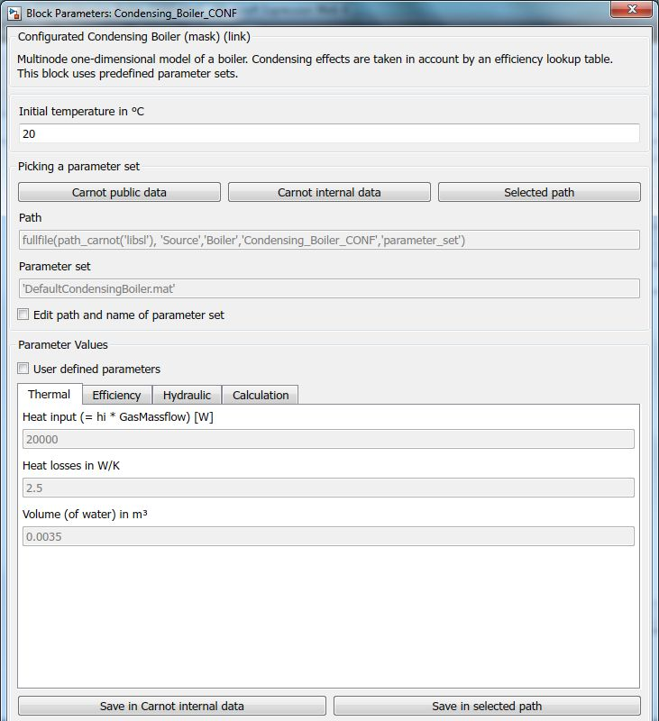

Condensing_Boiler
Path: CARNOT/Source/Boiler
Purpose:
1 x N node model of a condensing boiler with a lookup table fir the efficiency.
Description:
The boiler model is a simple model which considers the heat input into the
combustion chamber of the boiler. The model does not consider any limitations
from the process or combustion control (e.g. delay times, initial burner
control during start up). On the water side of the furnace, a multinode
model is used to model the time dependent conditions. The differential equation
for the water temperature characteristic of a node in the boiler is
(m*c/N)*dTNode/dt = UA/N*(Tamb-Tnode)
+ mdot*cf(Tin-Tnode)+Pact/N
the actual power is
Pact = eta_lookup_table(Tm, ctrl) * Pgas * Ctrl
the electric power consumption is
Pelec = Pel_lookup_table(Ctrl)
with the variables
| Symbol | Used for | Unit |
| c | heat capacity boiler | J/kg/K |
| Ctrl | control signal, range 0..1 | - |
| cf | heat capacity of fluid | J/kg/K |
| m | mass of the boiler | kg |
| mdot | mass flow rate | kg/s |
| N | number of nodes | - |
| Pact | actual thermal power of the boiler | W |
| Pgas | actual heat input on the gas side (= net caloric value * gas mass flow) |
W |
| t | time | s |
| Tm | temperature for efficiency table (inlet temperature or mean of inlet and outlet temperature) |
°C |
| Tamb | ambient temperature (for thermal losses) | °C |
| Tnode | fluid temperature of the node in the boiler | °C |
| Tin | temperature of the fluid entering the node | °C |
| UA | heat loss coefficient to ambient | W/K |
Input:
| Tamb | : | ambient temperature of the surrounding in °C |
| THB | : | Thermo Hydraulic Bus of the boiler return line |
| Ctrl | : | control signal of the boiler in [0..1] |
| Fuel | : | fuel bus, use Fuel block to create the bus |
Output:
| THB | : | Thermo Hydraulic Bus of the boiler flow line |
| Bdat | : | Data bus of the boiler with informations for a Scope, Display, To Workspace, To File block or the CARNOT Logger_Boiler |
Boiler Data Bus (Bdat):
| THB | : | Thermo Hydraulic Bus of the boiler return line |
| THB | : | Thermo Hydraulic Bus of the boiler flow line |
| Tmean | : | mean temperature in °C |
| Qdot | : | actual heating capacity (thermal power) in W |
| eco | : | ecolocgy bus, see chapter 2.1.5 Eco bus (2 Basic Concepts) |
| ControlActual | : | currently uses value of the control signal |
| ControlSetpoint | : | set point of the control signal |
Parameters and Dialog Box:

Choose the boiler parameter set in the mask from carnot public
data files, internal data files or any other selected path.
The parameters are saved as a structure in the folder "parameter_sets".
For details see
2.2.1 Choosing parameter sets for configurated models
Examples:
Open the example explorer from the Matlab command window
ExampleBrowser
or load the examples via the CARNOT library.
Literature:
Patankar: Numerical Heat Tansfer and Fluid Flow, 1980
Characteristics:
| Direct Feedthrough | : | Yes |
| Sample Time | : | Inherited from driving block |
| Vectorized | : | No |